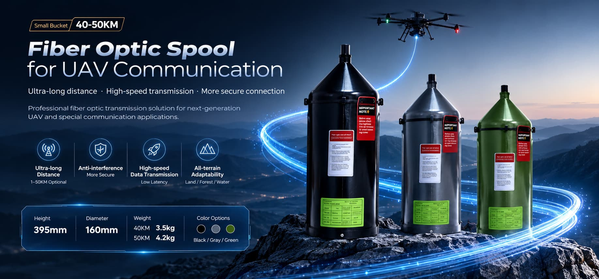
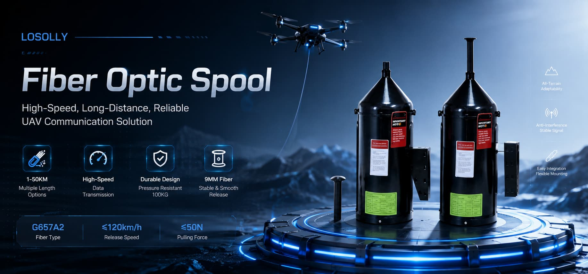
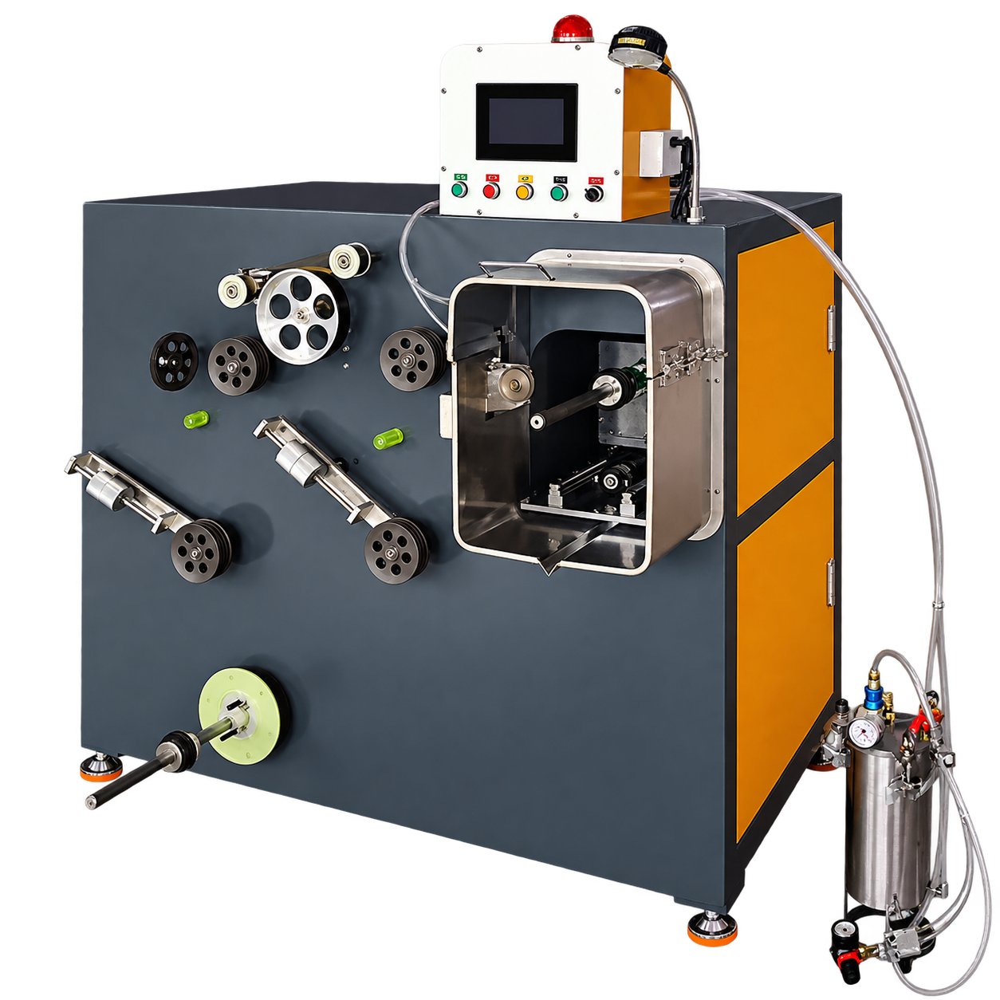
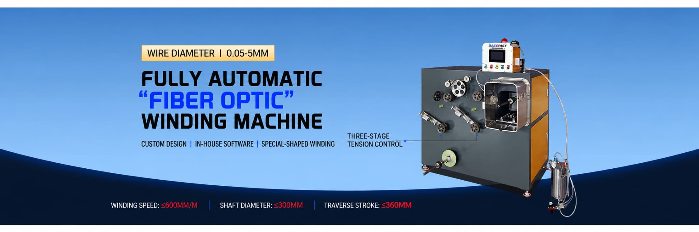
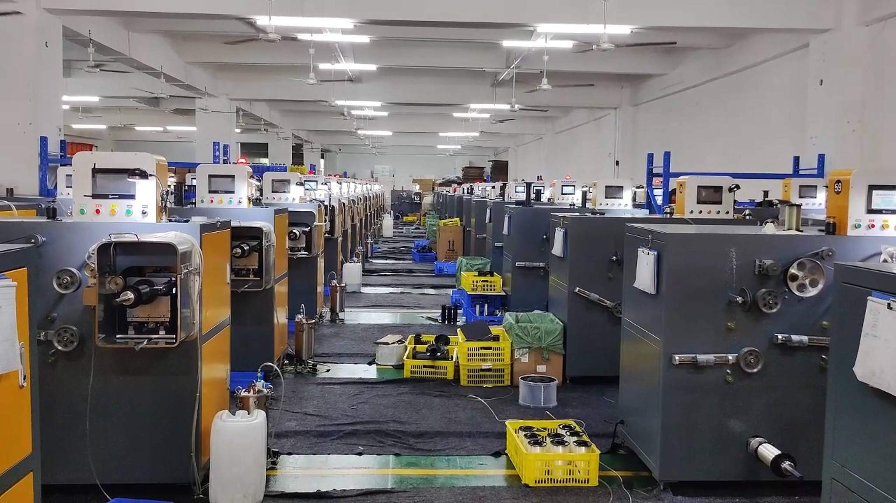

Fiber Optic Spools
A compact spool format with options illustrated for different lengths and colors. Final specifications should be confirmed against your requirements.
Ask about spool specifications →Product-focused solutions for fiber optic spools and automated winding machinery, backed by manufacturing experience and practical equipment design.

Explore the spool range and winding equipment. Share your target specifications with our team to confirm the appropriate configuration for your application.

A compact spool format with options illustrated for different lengths and colors. Final specifications should be confirmed against your requirements.
Ask about spool specifications →
Automated winding equipment with a machine layout designed for controlled fiber handling and configurable winding processes.
Explore winding equipment →Equipment features and product specifications depend on the selected model. Contact us to review your application and confirm details.
Guiding components help manage the fiber path through the winding process.
Machine configuration can be discussed around spool geometry and process requirements.
Control cabinet and drive components support the machine's operating workflow.
Mechanical assemblies and guides are available to inspect in the equipment gallery.
Discuss wire diameter, shaft dimensions, traverse stroke and speed requirements before ordering.
Share drawings, product targets and expected production needs for a more relevant quotation.

The winding machine shown in our materials combines a control interface, winding assemblies and fiber-guiding components. Machine options should be selected according to the target fiber and spool design.
Photos of the production floor, control components and winding assemblies.
Watch the videos below for additional product and equipment context. If a video does not load in your region or browser, open it on YouTube.
Our supplied factory images show winding machines and component details. Contact us to discuss the manufacturing process, machine configuration and project requirements.

Send your target specifications, expected quantities and any relevant drawings. We can then discuss suitable options and the information needed for a quotation.
Ask about fiber optic spools, winding equipment and configuration options.